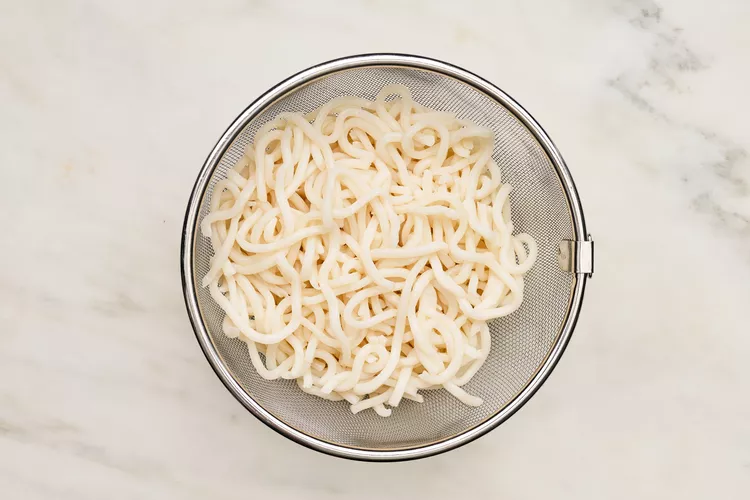
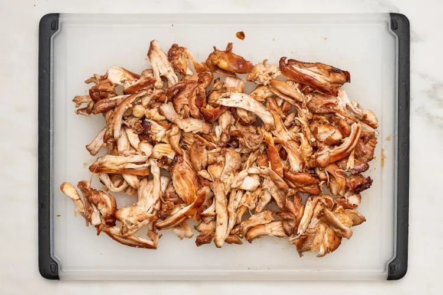

Potato Croquettes
These fluffernutter brownies have a reputation that goes back over a decade. When I was a kid, my school had an annual charity festival that included bake sales, music, games, and all sorts of fun activities put on by the students. Every year, I contributed to the bake sale. Fluffernutter brownies were always the first item to sell out, and they became my signature recipe. I have been making them ever since.
As a kid, I absolutely loved a toasted fluffernutter sandwich, and my obsession with a classic indulgent chocolate brownie goes way back. This recipe pairs a bittersweet chocolate brownie with salty, nutty peanut butter and sweet and chewy marshmallow fluff. The flavors and textures of fluffernutter brownies are satisfying in every single bite.
My fluffernutter brownies take less than an hour to make start to finish, making them an easy sweet treat to bake during the week. But be warned: you need real patience to let them cool down completely before slicing—otherwise, you won’t get neat, clean cuts.
Using a Boxed Brownie Mix
This is a decadent chocolate brownie recipe that uses melted chocolate and cocoa powder to enhance that flavor. Instead of making it from scratch, you can use a boxed brownie mix as a shortcut. This recipe works well with a fudge brownie or a cake brownie mix, prepared according to the package.
Tips for the Perfect Fluffernutter Brownie
- Beat the eggs and sugars until pale and creamy. This ensures a crunchy top on the brownies once baked.
- Fold the dry ingredients into the wet ingredients gently, as we don’t want to knock out all that air from the egg mixture.
- Don't over-swirl the peanut butter and marshmallow fluff into the brownie batter or else you will lose the distinct, pretty pattern.
- For clean edges, don’t slice the brownies until they have completely cooled down.
Ingredients:
- 3/4 cup (170g) unsalted butter
- 6 ounces semi-sweet chocolate, chopped, or semisweet chocolate chips
- 3 large eggs
- 2/3 cup (133g) granulated sugar
- 3/4 cup (160g) packed light brown sugar
- 1 1/4 cups (150g) all-purpose flour
- 2 tablespoons Dutch-processed cocoa powder
- Pinch salt
- 1/3 cup creamy peanut butter
- 1/3 cup marshmallow fluff
Method
- Preheat the oven to 350°F.
Stir together the soy sauce, sugar, mirin, ginger, and garlic in a large bowl. Add the chicken and toss to coat. Cover tightly with plastic wrap and place in the refrigerator for at least 20 minutes or up to 1 hour (beyond that, the high concentration of soy sauce can affect the texture of the chicken).

- Melt the butter and chocolate:
Prepare the noodles according to package directions.

- Beat the eggs and sugar:
Chop the scallions, separating the white and pale green parts from the dark green parts; set aside.

- Brown the marinated chicken:
Remove the chicken from the refrigerator. Set a colander or large strainer over a bowl and drain, allowing the excess to drip off. Reserve 1/4 cup marinade; discard remaining marinade. Heat 2 tablespoons of the oil in a large nonstick skillet over medium-high. Add the chicken and cook until golden brown on both sides and a thermometer inserted into the chicken registers 165°F, 4 to 5 minutes per side. Transfer to a medium bowl.

- Build the broth:
Heat the remaining 1 tablespoon oil in a large Dutch oven over medium-high. Add the chopped white and pale green scallions; cook, stirring occasionally, until fragrant and translucent, about 1 minute. Add 1/4 cup reserved marinade to the Dutch oven. Cook, stirring occasionally, until the sauce is thickened, about 2 minutes. Gradually add the broth, stirring constantly, until combined. Bring to a boil over high.

- Shred the chicken:
While the broth is coming to a boil, shred the chicken into bite-size pieces using two forks. Add the shredded chicken and its accumulated juices to the Dutch oven and bring back to a simmer over medium.

- Add the noodles and serve:
Add the cooked noodles to the Dutch oven and stir to combine. Divide the soup among 4 bowls, sprinkle with the dark green scallions, and serve. You can store the soup in an airtight container for up to 4 days, or freeze it for up to 3 months.